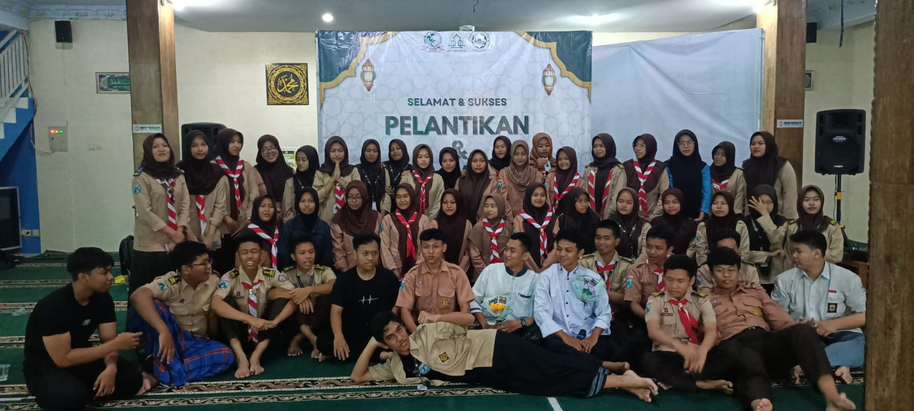

MASJID AL-KAUTSAR

MASJID
AL-KAUTSAR
Masjid Al-Kautsar adalah masjid yang berada di SMKN 1 Banyuwangi, masjid ini selalu digunakan
oleh warga sekolah untuk beribadah, beberapa kelas juga ada yang memilih melakukan pembelajaran
di masjid lantai atas. masjid Al-Kautsar dilengkapi fasilitas fasilitas yang dapat digunakan seluruh
warga sekolah. masjid Al-Kautsar juga digunakan saat ada acara acara tertentu khususnya acara
keagamaan.
KEGIATAN MASJID AL-KAUTSAR
Masjid merupakan tempat yang sangat penting bagi umat Muslim di seluruh dunia. Masjid bukan
hanya digunakan sebagai tempat untuk melakukan shalat lima waktu saja, tetapi juga sebagai
pusat kegiatan keagamaan yang lebih luas. Kegiatan keagamaan di mesjid memiliki manfaat
yang besar dalam menjaga hubungan antar komunitas. Dalam kegiatan ini, umat Islam dapat
berkumpul bersama,saling berbagi pengalaman, dan mempererat hubungan sosial mereka. Kegiatan
keagamaan di masjid juga membantu umat Islam dalam menjaga kepercayaan mereka dan menguatkan
akidah mereka. Dalam kegiatan seperti shalat berjamaah dan tadarus Al-Quran, umat dapat belajar untuk lebih fokus dalam beribadah dan meningkatkan kualitas bacaan Al-Quran mereka.

TADARUS PAGI
Kegiatan tadarus melibatkan dua orang atau
lebih. Artinya sebagian menyimak dan yang
lain membaca, dengan tujuan mempelajari
atau menjaga hafalan dengan mengulang bacaan
Al Quran.

BAKTI SOSIAL
Bakti sosial atau lebih dikenal sebagai
bansos merupakan salah satu kegiatan
wujud dari rasa kemanusiaan antara sesama
manusia. Bakti Sosial merupakan suatu
kegiatan dimana dengan adanya kegiatan ini
kita dapat merapatkan kekerabatan kita.
Bakti sosial diadakan dengan tujuan-tujuan tertentu.

RUTINAN NGAJI SORE
rutinan ngaji sore adalah kegiatan mengaji
atau belajar Al-Qur'an yang dilakukan pada
sore hari,
biasanya setelah Ashar hingga menjelang Maghrib. Kegiatan ini umumnya
dilakukan di masjid AL-KAUTSAR SMKN 1 BANYUWANGI.
<<<<<<< HEAD

BUKA BERSAMA
Berbuka puasa bersama merupakan cara untuk
menghargai nikmat berupa makanan dan minuman yang diberikan
oleh Allah SWT setelah menahan lapar dan haus sepanjang hari. Selain itu,
bukber juga menjadi ajang untuk meningkatkan kebersamaan, saling berbagi,
dan meningkatkan rasa empati antar sesama.
=======

BERSHOLAWAT
Dari penjelasan pengurus ponpes,
seni terbang hadrah merupakan nyanyian
Islami atau shalawat yang diiringi dengan permainan
beberapa alat musik terbang/ rebana atau ansambel.
Musik terbang hadrah merupakan permainan musik terbang sederhana,
baik pola pukulan dari masing-masing alat musik maupun lagunya.

BAGI BAGI TAKJIL
Berbuka puasa bersama merupakan cara untuk
menghargai nikmat berupa makanan dan minuman yang diberikan oleh
Allah SWT setelah menahan lapar dan haus sepanjang hari.
Selain itu, bukber juga menjadi ajang untuk meningkatkan kebersamaan,
saling berbagi, dan meningkatkan rasa empati antar sesama.
>>>>>>> bdbe0e082867b915d366e227be3749cff54434fc

MA’ALKUTSAR
Ma’alkautsar adalah kegiatan pelantikan yang dilakukan remaja masjid Al-kautsar.
Dengan diadakannya pelantikan maka seseorang resmi menduduki jabatan atau suatu posisi
tertentu.Selain itu, pada pelantikan biasanya akan diambil sumpah agar orang yang dilantik
dapat amanah dalam menjalani tugasnya. Pada saat kegiatan ini juga terdapat kegiatan Sertijab
atau serah terima jabatan, dari jabatan pengurus sebelumnya ke pengurus baru.
<<<<<<< HEAD
=======
BUKA BERSAMA
Berbuka puasa bersama merupakan cara untuk menghargai nikmat berupa
makanan dan minuman yang diberikan oleh Allah SWT setelah menahan lapar
dan haus sepanjang hari. Selain itu, bukber juga menjadi ajang untuk
meningkatkan kebersamaan, saling berbagi, dan meningkatkan rasa empati antar sesama.
>>>>>>> bdbe0e082867b915d366e227be3749cff54434fc